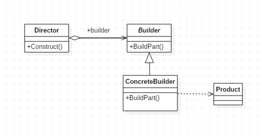

# 建造者模式（Builder)
概述：建造者模式即每次都构建对象的一个简单子部件，慢慢构建起一个复杂对象的模式
# 特点：
- 将一个复杂对象分解为多个简单对象，一步步构建起来。
- 将变与不变分离，即产品的组成部分是不变的，每个子部件可以自由选择
- 有一个指挥者，一个建造者接口，若干建造者实现类，一个产品类
# 优缺点：
优点：
- 建造者独立，易扩展，符合开闭原则
- 便于控制细节风险
- 减低代码耦合度，客户端不必知道产品内部细节，将产品本身和产品创建过程解耦
- 可以更精细的控制创建过程，按需创建对象
缺点:
- 产品的组成部分必须相同，限制了使用范围
- 如果产品内部实现复杂，而且后期产品发生变化，建造者也将要同步修改，维护成本较大
# 应用场景：
- 需要生成的对象具有复杂的内部结构
- 需要生成的对象内部属性较多且可选时
# 建造者模式的结构与实现
建造者模式的结构

建造者模式的实现
代码逻辑都不难，相信大家都能看懂。代码如下：
Builder 1
2
3
4
5
6
7
8
9
10
11
12
13
14
15
16
17
18
19
20
21
22
23
24
25
26
27
28
29
30
31
32
33
34
35
36
37
38
39
40
41
42
43
44
45
46
47
48
49
50
51//产品类
class Product {
public:
string str_1 = "None";
string str_2 = "None";
void display() {
cout << str_1 << endl;
cout << str_2 << endl;
}
};
//建造者抽象接口，对product中的所有属性都提供一个编辑的接口
class Builder {
public:
virtual void BuildPart_1(Product* product) = 0;
virtual void BuildPart_2(Product* product) = 0;
};
//建造者实现类，按需初始化product
class Builder_1 : public Builder{
public:
void BuildPart_1(Product* product) {
product->str_1 = "BuildPart_1";
}
void BuildPart_2(Product* product) {}
};
//指挥者类，先new一个product，然后调用Construct初始化这个product，并返回
class Director {
public:
Builder* builder;
Product* product = new Product();
Director(Builder* builder_) : builder(builder_){}
Product* Construct() {
builder->BuildPart_1(product);
builder->BuildPart_2(product);
return product;
}
};
int main() {
Product* product;
Builder* builder = new Builder_1();
Director* director = new Director(builder);
product = director->Construct();
product->display();
}
//运行结果:
//BuildPart_1
//None
结语：建造者模式主要是为了在创建复杂对象时，可以更精细地创建出想要的对象
参考文献：
- 《设计模式：可复用面向对象软件的基础》